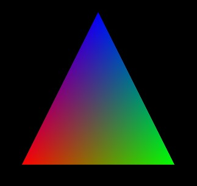
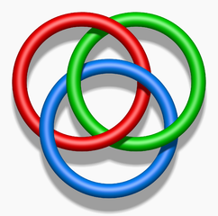
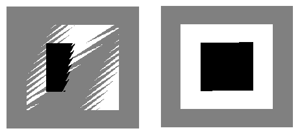
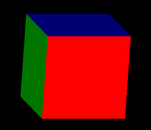

Section 6: Into 3D with OpenGL
It's time to move on to 3D. We will do this by looking at OpenGL, a common and widely supported 3D graphics API. OpenGL was introduced in 1992 and has undergone a lot of changes recently. In fact, we will work for now with the original version, OpenGL 1.0, much of which is removed from the most modern versions, except as an optional module in some versions. However, the newer OpenGL standard is a difficult entry into 3D for beginners. And OpentGL 1.0 is still widely supported, so it makes sense to begin with that.
Currently, OpenGL is implemented in the graphics hardware of most desktop and laptop computers. In practice, they all support OpenGL 1.0 as well as newer versions. (Graphics cards can support other graphics APIs at the same time as OpenGL, including DirectX, the standard graphics library for Windows.) Handheld computing devices such as smart phones and tablets often implement OpenGL ES, a version for "embedded systems." OpenGL ES 1.0 was based on OpenGL 1.3 and includes most of OpenGL 1.0. OpenGL ES 2.0 is not compatible with OpengGL 1.0. Newer Android and iOS devices support both OpenGL ES 1.0 and 2.0, while older devices only supported 1.0. There is also WebGL, which is a technology for 3D graphics on Web pages. It is pretty much the same as OpenGL ES 2.0, with some adaptations to the Web environment. It is now supported pretty well in Firefox, Chrome, and Safari. Although it is not yet in Internet Explorer, it should be included in IE 11.
OpenGL is a very low-level graphics API, similar to the 2D APIs we have covered. That is, it has only very basic drawing operations and no built-in support for scene graphs or object oriented graphics. The plan for the rest of the course is to use old-fashioned OpenGL to learn about 3D graphics fundamentals. Then, we'll spend time on some higher-level 3D graphics systems, more similar to what most graphics programmers and designers will use for their work. After that, we'll come back to OpenGL to cover its more modern features.
Remember that when I say "OpenGL" for the time being, I mean "OpenGL 1.0." OpenGL 1.0 is a large API, and I will only cover a small part of it. The goal is to introduce 3D graphics concepts, not to fully cover the API.
Introduction to OpenGL and 3D Drawing
OpenGL consists of a large number of subroutines. It also comes with a large number of named constants for use in subroutine calls. The API is defined in the C programming language, but there are "bindings" for many other languages that make it possible to use OpenGL from those languages. For example, the OpenGL binding for Java is called JOGL. In this section, I will use the C API; I will introduce JOGL in the next section. I also note here that OpenGL is purely an API for drawing. It includes nothing about creating windows in which to draw or interacting with the user; again, that is something we will deal with in the next section. For now, we limit discussion to drawing with the OpenGL 1.0 API.
In a two dimensional coordinate system, points are given by a pair of coordinates, conventionally called x and y, and there are two coordinate axes, the x-axis and the y-axis. In three dimensions, you need three coordinates to specify a point. The third coordinate is usually called z, and the third dimension is represented by a third axis, the z-axis, which is perpendicular to both the x-axis and the y-axis. All three axes intersect at the point (0,0,0), which is called the origin. In the usual OpenGL setup, the x and y-axes lie on the viewing surface (such as your computer screen). The positive direction of the x-axis points to the right, and the positive direction of the y-axis points upward (not down, as in the Java and Canvas APIs). The z-axis is perpendicular to the screen. The positive direction of the z-axis points outward from the screen, towards the viewer, and the negative direction extends behind the screen.
In the default coordinate system, x, y, and z are all limited to the range −1 to 1. Anything drawn inside this cube is projected onto the two-dimensional drawing surface for viewing. Anything drawn outside the cube is clipped and does not appear in the displayed 2D image. The projection is done, by default, by simply discarding the z-coordinate. Of course, all of these defaults can be changed, as we will see. (Saying that the z-axis points out of the screen by default is a little misleading. The truth, which you should probably ignore, is that the actual default coordinate system—the one that you get if you make no changes at all—is a left-handed system with positive z pointing into the screen. However, the conventional way to set up a non-default projection includes a z-axis flip that changes the coordinate system to right-handed, and OpenGL programmers think in terms of a right-handed system.)
OpenGL can draw only points, lines, and triangles. Anything else has to built up out of these very simple shapes. (Actually, OpenGL 1.0 can also draw quadrilaterals and polygons, but they are easy to construct from triangles and have been dropped from modern OpenGL, so I ignore them here.) Let's jump right in and see how to draw a triangle:
glBegin(GL_TRIANGLES); glVertex3f(1,0,0); glVertex3f(0,1,0); glVertex3f(0,0,1); glEnd();
This draws the triangle with vertices at the 3D points (1,0,0), (0,1,0), and (0,0,1). There is already a lot here to talk about. A shape is drawn by specifying a sequence of vertices between calls to glBegin() and glEnd(). The parameter to glBegin() is a constant that tell what kind of shape to draw. In OpenGL terms, the parameter specifies which primitive to draw. Note that GL_TRIANGLES is plural. It can be used to draw several triangles with one glBegin/glEnd. With three vertices, it produces one triangle; with six vertices, it produces two; and so on. There are seven primitives for drawing points, lines, and triangles:

In this illustration, the vertices are labeled in the order in which they would be specified between glBegin() and glEnd().
The GL_TRIANGLES primitive, as I've said, produces separate triangles. GL_TRINAGLE_STRIP produces a strip of connected triangles. After the first vertex, every pair of additional vertices adds another triangle. Note the order of the vertices: Odd numbered vertices are on one side of the strip; even number vertices are on the other side. In a GL_TRIANGLE_FAN, the first vertex becomes the basis of the fan and is connected to all the other vertices. After the first two vertices, each additional vertex will add another triangle to the fan. Note that triangle fans can be used to draw polygons.
Points are easy. The GL_POINTS primitive produces one point for each vertex that is specified. By default, the size of a point is one pixel. With GL_LINES, each pair of vertices produces a line segment joining those points. GL_LINE_STRIP produces a series of line segments joining all the vertices. And GL_LINE_LOOP is similar to GL_LINE_STRIP except that one additional line segment is drawn connecting the last vertex to the first vertex. The default width for lines is one pixel.
In the above example, each vertex is specified by calling the function glVertex3f(). There are actually quite a few functions for specifying vertices. The function names all start with "glVertex". The suffix, such as "3f", gives information about the parameters that are supplied to the function. This is a very common pattern in OpenGL, so it's worth paying attention to how it works. In "glVertex3f", the "3" means that 3 numbers will be provided in the parameter list, and the "f" means that the numbers are of type float. The "f" could be replaced by "d" for numbers of type double or by "i" for numbers of type int. The "3" can be replaced by "2", meaning that just two coordinates will be provided. In that case, the two coordinates are x and y, and the z coordinate is set to 0, so you are effectively drawing in 2D on the xy-plane. For example, to draw a 1-by-1 square with vertices at 0 and 1, one could use:
glBegin(GL_TRIANGLE_FAN); glVertex2i(0,0); glVertex2i(1,0); glVertex2i(1,1); glVertex2i(0,1); glEnd();
There is one more important variation: It is possible to add a "v" to the end of the name. This means that there will be only one parameter, which will be an array that contains the coordinates. The number of coordinates is still given by a number in the function name, not by the length of the array. In fact, in the C API, the parameter is actually a pointer to the data. In C, arrays and pointers are in many ways interchangeable, and the use of a pointer as the parameter adds flexibility to the way the coordinate data can be represented. For example, it is common to put all the coordinate data into one big array and to specify individual vertices using pointers that point into the middle of the array. Here's an example for people who know C:
float coords[] = { 0,0.5, -0.5,-0.5, 0.5,-0.5 };
glBegin(GL_TRIANGLES);
glVertex2fv(coords); // array name is a pointer to the start of the array
glVertex2fv(&coords[2]); // &coords[2] is a pointer to second element in array
glVertex2fv(&coords[4]); // &coords[4] is a pointer to fourth element in array
glEnd();
The family of functions with names consisting of "glVertex" with all its possible suffixes is often referred to as glVertex*.
Color
Functions from the family glColor* can be used to specify colors for the geometry that we draw. For example, glColor3f has as parameters three floating points numbers that give the red, green, and blue components of the color as numbers in the range 0.0 to 1.0. (In fact, values outside this range are allowed, even negative values. When color values are used in computations, out-of-range values will be used as given. When a color actually appears on the screen, its component values are clamped to the range 0 to 1. That is, values less than zero are changed to zero, and values greater than one are changed to one.)
You can add a fourth component to the color by using glColor4f(). The fourth component, known as alpha, is not used in the default drawing mode, but it is possible to configure OpenGL to use it as the degree of transparency of the color, similarly to the use of the alpha component in Java graphics.
If you would like to use integer color values in the range 0 to 255, you can use glColor3ub() or glColor4ub to set the color. In these function names, "ub" stands for "unsigned byte." Unsigned byte is an eight-bit data type with values in the range 0 to 255.
There are also versions of these functions with names ending in "v": glColor3fv(), glColor4fv(), glColor3ubv(), glColor4ubv(). These functions have one parameter that is a pointer to an array that contains the color component values. In fact, there are may other variations in the glColor* family of functions, but the one's I have mentioned are probably the most common. Here are some examples of commands for setting drawing colors in OpenGL:
glColor3f(0,0,0); // Draw in black.
glColor3f(1,0,0); // Draw in red.
glColor3ub(1,0,0); // Draw in a color just a tiny bit different from
// black. (The suffix, "ub" or "f", is significant!)
glColor3ub(255,0,0); // Draw in red.
glColor4f(1, 0, 0, 0.5); // Draw in transparent red, but only if OpenGL
// has been configured to do transparency. By
// default this is the same as drawing in plain red.
float darkCyan[] = { 0.0, 0.5, 0.5 };
glColor3fv(darkCyan); // Draw in a dark blue/green color.
Using any of these functions sets the value of a "current color." When you generate a vertex with one of the glVertex* functions, the current color is saved along with the vertex coordinates as an attribute of the vertex. We'll see that vertices can have other kinds of attribute as well as color. One interesting point about OpenGL is that colors are associated with individual vertices, not with complete shapes. By changing the current color between calls to glBegin() and glEnd(), you can get a shape in which different vertices have different color attributes. When you do this, OpenGL will compute the colors of pixels inside the shape by blending the colors of the vertices. (Again, since OpenGL is extremely configurable, I have to note that blending is just the default behavior.) For example, here is a triangle in which the three vertices are assigned the colors red, green, and blue:

This image is often used as a kind of "Hello World" example for OpenGL. Here's the C code that was used to draw it:
glBegin(GL_TRIANGLES); glColor3f( 1, 0, 0 ); // red glVertex2f( -0.5, -0.5 ); glColor3f( 0, 1, 0 ); // green glVertex2f( 0.5, -0.5 ); glColor3f( 0, 0, 1 ); // blue glVertex2f( 0, 0.5 ); glEnd();
Note that you do not have to explicitly set a color for each vertex, as was done here. If you want a shape that is all one color, you just have to set the current color once, before drawing the shape (or just after the call to glBegin().)
It would be possible to clear the drawing area to a background color by drawing a colored rectangle, but OpenGL has a potentially more efficient way to do it. The function
glClearColor(r,g,b,a);
sets up the color to be used for clearing. The parameters are floating point values in the range 0 to 1, and there are no variants of this function. The default clear color is black, with 0 for all the color components. To fill the drawing area with the clear color, call
glClear( GL_COLOR_BUFFER_BIT );
The parameter is a constant integer that says that it is the drawing area that is being cleared. The correct term for what I have been calling the drawing area is the color buffer, where buffer is a general term referring to a region in memory. OpenGL uses several buffers in addition to the color buffer. We will encounter the "depth buffer" very soon. It is possible to use glClear() to clear several buffers at the same time by combining the constants that represent them with a logical OR operation. For example,
glClear( GL_COLOR_BUFFER_BIT | GL_DEPTH_BUFFER_BIT );
We will generally use glClear() in this form.
The Hidden Surface Problem and the Depth Test
An obvious point about viewing in 3D is that one object can be behind another object. When this happens, the back object is hidden from the viewer by the front object. When we create an image of a 3D world, we have to make sure that objects that are supposed to be hidden behind other objects are in fact not visible in the image. This is the hidden surface problem.
The solution might seem simple enough: Just draw the objects in order from back to front. If one object is behind another, the back object will be covered up later when the front object is drawn. This is called the painter's algorithm. It's essentially what you are used to doing in 2D. Unfortunately, it's not so easy to implement. First of all, you can have objects that intersect, so that part of each object is hidden by the other. Whatever order you draw the objects in, there will be some points where the wrong object is visible. To fix this, you would have to cut the objects into pieces, along the intersection, and treat the pieces as as separate objects. In fact, there can be problems even if there are no intersecting objects: It's possible to have three non-intersecting objects where the first object hides part of the second, the second hides part of the first, and the third hides part of the first. The painter's algorithm will fail no matter which order you draw the three objects. The solution again is to cut the objects into pieces, but now it's not so obvious where to cut. Consider the famous example of the Borromean rings (public domain image from wikimedia):
{kind=link}

Even though these problems can be solved, there is another issue. The correct drawing order can change when the point of view is changed or when a geometric transformation is applied, which means that the correct drawing order has to be recomputed every time that happens. In an animation, that would mean for every frame.
So, OpenGL does not use the painter's algorithm. Instead, it uses a technique called the depth test. The depth test solves the hidden surface problem no matter what order the objects are drawn in, so you can draw them in any order you want! The depth test requires that an extra number be stored for each pixel in the image. This extra memory makes up the depth buffer that I mentioned earlier. During the drawing process, the depth buffer is used to keep track of what is currently visible at each pixel. When a second object is drawn at that pixel, the information in the depth buffer can be used to decide whether the new object is in front of or behind the object that is currently visible there. If the new object is in front, then the color of the pixel is changed to show the new object, and the depth buffer is also updated. If the new object is behind the current object, then the data for the new object is discarded and the color and depth buffers are left unchanged.
By default, the depth test is not turned on, which can lead to very bad results when drawing in 3D. You can enable the depth test by calling
glEnable( GL_DEPTH_TEST );
It can be turned off by calling glDisable(GL_DEPTH_TEST). (There are many OpenGL settings that are turned on and off using glEnable/glDisable.)
You don't necessarily need to know any more about how the depth test actually works, but here are some details: For each pixel, the depth buffer stores a representation of the distance from the user of the point that is currently visible at that pixel. This value is essentially the z-coordinate of the point, after transformations have been applied. (In fact, the depth buffer is often called the z-buffer.) The possible z-coordinates are scaled to the range 0 to 1. The value 1 in the depth buffer represents the background, which is behind any object that can be drawn. When you clear the depth buffer, it is filled with a 1 at each pixel. In OpenGL, the range of z-coordinates can be shown must be limited; the use of the depth buffer is the reason for this limitation.
The depth buffer algorithm can give some strange results when two objects lie at exactly the same distance from the user. Logically, it's not even clear which object should be visible, but the real problem with the depth test is that it might show one object at some points and the second object at some other points. This is possible because numerical calculations are not perfectly accurate. Here an actual example:

In the two pictures shown here, a gray square was drawn, followed by a white square, followed by a black square. The squares all lie in the same plane. A very small rotation was applied, to make the computer do some calculations. The picture on the right was drawn with the depth test disabled. On the left, the depth test was enabled, and you can see the strange result.
By the way, the discussion here assumes that there are no transparent objects. Unfortunately, the depth test does not handle transparency correctly.
Geometric Transformations in 3D
We've seen that geometric transformations are an important part of 2D computer graphics. In three dimensions, they become even more essential. The three basic types of transformation—scaling, rotation, and translation—extend to three dimensions with just a few changes. Translation is easiest. In 2D, a translation adds some number onto each coordinate. The same is true in 3D; we just need three numbers, to specify the amour of motion in the direction of each of the coordinate axes. A translation by (tx,ty,tz) transforms the point (x,y,z) to (x+tx, y+ty, z+tz).
Similarly, a 3D scaling transformation requires three scale factors, one to specify the amount of scaling in each of the coordinate directions. A scaling by (sx,sy,sz) transforms the point (x,y,z) to (x*sx, y*sy, z*sz).
Rotation is harder. First, you need to understand a little more about three-dimensional coordinate systems. The standard OpenGL coordinate system is a right-handed coordinate system. The term comes from the fact that if you curl the fingers of your right hand in the direction from the positive x-axis to the positive y-axis, and extend your thumb out from your fist, then your thumb will point in the direction of the positive z-axis. If you do this for the x and y-axes in on the screen in OpenGL's standard orientation, then your thumb will point towards your face. There are also left-handed coordinate systems, where curling the fingers of your left hand from the positive x-axis to the positive y-axis will point your left thumb in the direction of the positive z-axis. Note that the left/right handed distinction is not a property of the world, just of the way that one chooses to lay out coordinates on the world. You can transform a right-handed system to a left-handed system with the right kind of geometric transformation. For example, scaling by (1,1,−1) would do so. That transformation represents a reflection through the xy-plane, and it reverses the orientation of the z-axis. We'll see in a minute how the left-handed/right-handed distinction applies to rotations.
In 2D, rotation is rotation about a point, which we usually select to be the origin. In 3D, rotation is rotation about a line, which is called the axis of rotation. Think of the Earth rotating about its axis. The axis of rotation stays fixed, and points that are not on the axis move in circles about the axis. Any line can be an axis of rotation, but we generally use an axis that passes through the origin. The most common rotations are rotation about the x-axis, rotation about the y-axis, and rotation about the z-axis, but it's convenient to be able to use any line through the origin as the axis. There is an easy way to specify the line: Just specify one other point that is on the line, in addition to the origin. That's how things are done in OpenGL: An axis of rotation is specified by three numbers, (dx,dy,dz), which are not all zero. The axis is the line through (0,0,0) and (dx,dy,dz). To specify a rotation transformation in 3D, you have to specify an axis and the angle of rotation about that axis.
We still have to account for the difference between positive and negative angles. We can't just say clockwise or counterclockwise. If you look down on the rotating Earth from above the North pole, you see a clockwise rotation; if you look down on it from about the South pole, you see a counterclockwise rotation. So, the difference between the two is not well-defined. To define the direction of rotation in 3D, we use the right-hand rule: Point the extended thumb of your right hand in the direction from (0,0,0) to (dx,dy,dz), where (dx,dy,dz) is the point that specifies the axis of rotation. Then the direction of rotation for positive angles is given by the direction in which your fingers curl. However, I need to emphasize that the right-hand rule only works if you are using a right-handed coordinate system. If you have switched to a left-handed coordinate system, then you need to use a left-hand rule to determine the direction of rotation for positive angles.
The functions for doing geometric transformations in OpenGL are glScalef(), glRotatef(), and glTranslatef(). The "f" indicates that the parameters are of type float. There are also versions ending in "d" to indicate parameters of type double. As you would expect, 3D scaling and translation require three parameters. Rotation requires four parameters: The first is the angle of rotation measured in degrees (not radians), and the other three parameters specify the axis of rotation. In the command glRotatef(angle,dx,dy,dz), the rotation axis is the line through the points (0,0,0) and (dx,dy,dz). At least one of dx, dy, and dz should be non-zero. Here are a few examples:
glScalef(2,2,2); // Uniform scaling by a factor of 2.
glScalef(0.5,1,1); // Shrink by half in the x-direction only.
glScalef(0,0,-1); // Reflect through the xy-plane.
glTranslatef(1,0,0); // Move 1 unit in the positive x-direction.
glTranslatef(3,5,-7.5); // Move (x,y,z) to (x+3, y+5, z-7.5)
glRotatef(90,1,0,0); // Rotate 90 degrees about the x-axis.
// Moves the +y axis onto the +z axis
// and the +z axis onto the -y axis.
glRotatef(-90,-1,0,0); // Has exactly the same effect as the previous rotation.
glRotatef(90,0,1,0); // Rotate 90 degrees about the y-axis.
// Moves the +z axis onto the +x axis
// and the +x axis onto the -z axis.
glRotatef(90,0,0,1); // Rotate 90 degrees about the z-axis.
// Moves the +x axis onto the +y axis
// and the +y axis onto the -x axis.
glRotatef(30,1.5,2,-3); // Rotate 30 degrees about the line through
// the points (0,0,0) and (1.5,2,-3).
The function glLoadIdentity() can be called to discard any transformations that have been applied. It takes no parameters. The identity transformation is one that has no effect; that is, it leaves every point fixed. Calling glLoadIdentity() gives you a known starting point for setting up transformations.
You already know that when doing hierarchical modeling, you need to be able to save the current transformation and restore it later. And you know that one way to do that is with a matrix stack. OpenGL has direct support for matrix stacks. Calling glPushMatrix() saves a copy of the current transformation on the matrix stack. Calling glPopMatrix() restores a transformation that was saved by glPushMatrix() by removing the top transformation from the stack and installing it as the current transformation.
As a simple example, we will draw a 1-by-1-by-1 cube centered at the origin, where each face of the cube is a different color. For convenience, we use a short function to draw a square in a specified color. The square is drawn with its center at the point (0,0,0.5), so that it is in position to be the front face of the cube.
void square(float r, float g, float b) {
glColor3f(r,g,b); // The color for the square.
glTranslatef(0,0,0.5); // Move square 0.5 units forward.
glBegin(GL_TRIANGLE_FAN);
glVertex2f(-0.5,-0.5); // Draw the square (before the
glVertex2f(0.5,-0.5); // the translation is applied)
glVertex2f(0.5,0.5); // on the xy-plane, with its
glVertex2f(-0.5,0.5); // at (0,0,0).
glEnd();
}
Given this function, we can draw the cube as follows. In this code, the cube is rotated so that several faces are visible; without the rotation, only the front face would be visible. The square() function can be used to draw the front face directly, but the call to that function is still surrounded by glPushMatrix/glPopMatrix to prevent the translation inside the function from affecting the rest of the drawing. We can get the other faces of the cube by rotating the square from its original position to make it coincide with one of the other faces of the cube. For example, we get the back face of the cube by rotating 180 degrees about the y-axis, and the top face by rotating −90 degrees about the x-axis. Each face uses glPushMatrix/glPopMatrix to make sure that the transformations that are applied to the face affect only that face.
glLoadIdentity(); // start with no transformation glRotatef(15,0,1,0); // rotate the cube 15 degrees about y-axis glRotatef(15,1,0,0); // rotate the cube 15 degrees about x-axis // Now, draw the six faces of the cube by drawing its six faces. glPushMatrix(); square(1,0,0); // front face is red glPopMatrix(); glPushMatrix(); glRotatef(180,0,1,0); // rotate square to back face square(0,1,1); // back face is cyan glPopMatrix(); glPushMatrix(); glRotatef(-90,0,1,0); // rotate square to left face square(0,1,0); // left face is green glPopMatrix(); glPushMatrix(); glRotatef(90,0,1,0); // rotate square to right face square(1,0,1); // right face is magenta glPopMatrix(); glPushMatrix(); glRotatef(-90,1,0,0); // rotate square to top face square(0,0,1); // top face is blue glPopMatrix(); glPushMatrix(); glRotatef(90,1,0,0); // rotate square to bottom face square(1,1,0); // bottom face is yellow glPopMatrix();
Here's an image that was produced from this code:

Introduction to the Projection Transformation
The coordinate transformations that I have been discussing here operate on 3D space. They make up what is called the modelview transformation, since it is used for geometric modeling and for selecting the point of view. But we also need another type of transformation: the projection transformation that maps the 3D world onto a 2D viewing surface. I will come back to the whole topic of transforms later, but for now, there are a few things you need to know.
The first point is that OpenGL keeps the projection transformation separate from the modelview transformation. The projection transformation is always applied last, no matter when you specify it. Unfortunately, the same set of functions can be used to manipulate both kinds of transform, so you have to tell OpenGL which transformation you want to work on. This is done with the glMatrixMode() function. To start working on the projection transformation, call
glMatrixMode( GL_PROJECTION );
To go back to working on the modelview transformation, call
glMatrixMode( GL_MODELVIEW );
It's common to leave the matrix mode set to GL_MODELVIEW, except when you are actually working in another mode. Here is the code that might be used to set up the projection:
glMatrixMode(GL_PROJECTION); glLoadIdentity(); glOrtho( xmin, xmax, ymin, ymax, zmin, zmax ); glMatrixMode(GL_MODELVIEW);
The glOrtho command does the work. The parameters specify the ranges of x, y, and z that will be visible in the drawing area, and the projection is done by discarding the z-coordinate. This type of projection is not very realistic, and we will look at alternatives later.
Introduction to Lighting, Materials, and Normal Vectors
Another aspect of 3D graphics that I will mostly defer for now is the effect of lighting on a scene. To get a realistic scene, you have to simulate light sources and the interaction of light with objects in the scene. OpenGL uses a very simplified lighting model, but it can still add significantly to the realism of an image. However, by default, lighting calculations are disabled. To enable them, you have to call
glEnable( GL_LIGHTING ); // enable lighting calculations glEnable( GL_LIGHT0 ); // turn on light source number 0
This turns on very basic lighting, with a single light source of white light that shines from the direction of the viewer onto the scene. However, when you do this, everything in the scene will be a dull gray color. The problem is that the lighting calculation uses something called material instead of simple color. A surface's material properties determine how it interacts with light. In addition to simple color, it can include properties such as texture and reflectivity. Fortunately, it's possible to tell OpenGL to treat the color as specified by glColor* as the basic material color. You can do this by calling
glEnable( GL_COLOR_MATERIAL ); // use glColor* values as material color
Another factor that enters into the lighting calculation is the angle at which light hits a surface. Light that shines directly on a surface illuminates it more brightly than light that hits the surface at a glancing angle. However, to determine this angle, OpenGL needs to know what direction the surface is facing. This direction is determined by the normal vector to the surface. A normal vector indicates the direction that is perpendicular to the surface.
We will return to the topic of lighting, material, and normal vectors in much more detail in a later section.